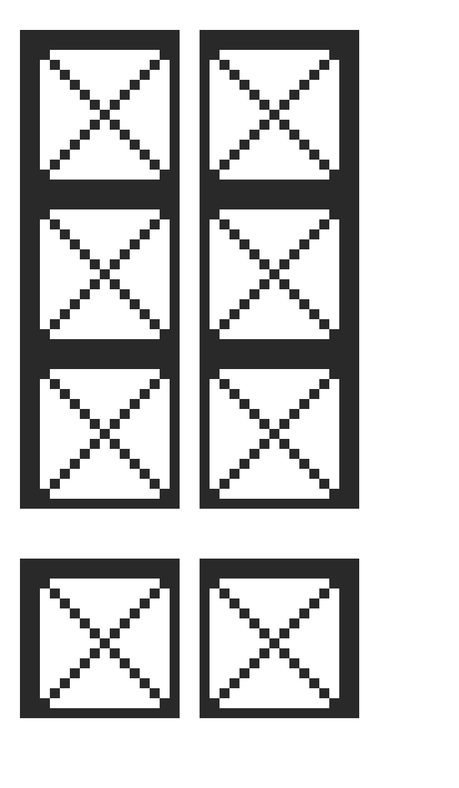
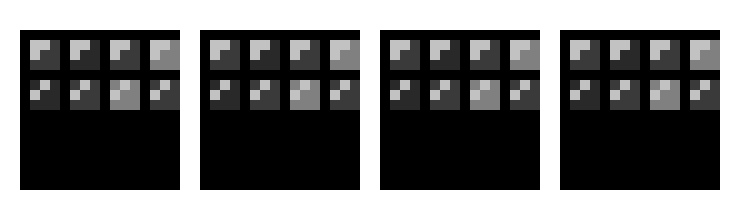
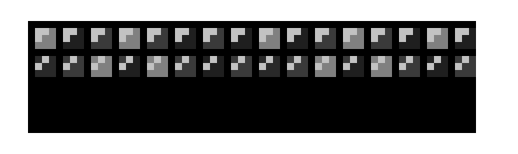
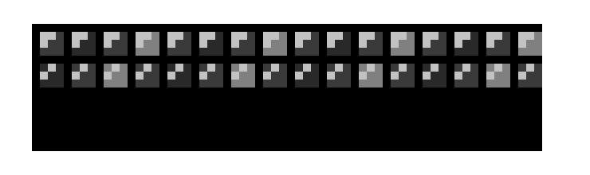
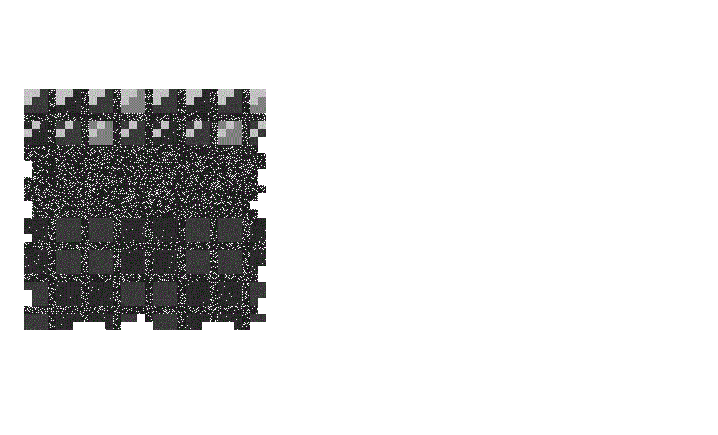
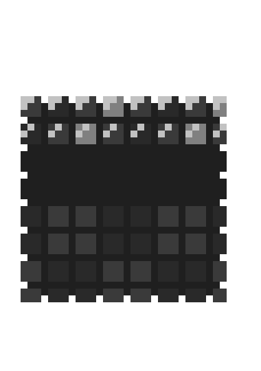
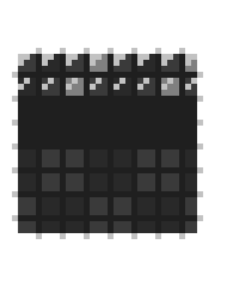
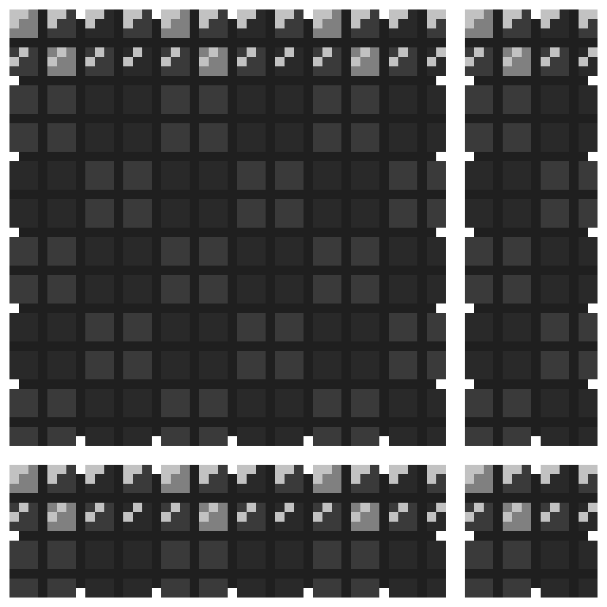

Grooveyard: Creating ‘Dance World’ Tiles
Grooveyard is a pixel-art puzzle game in development. It was originally part of the 2020 GMTK Game Jam hosted yearly on itch.io and the game earned 10th place overall. Due to the success, GuavaGoose Games decided to pursue a finished version of the game. I was brought on the team in Summer of 2022 to be an asset artist, and now in Fall 2022, I am currently the lead pixel artist.
Grooveyard features skeletons and various graveyard-themed locations. One of these locations is ‘Dance Wold’, named for the dance theme that the levels in this location (or “world”) has. Here are the assets I created for the world and the rough world concept.
Sidenote: ‘Dance World’ is the final world of the game featuring the unique concepts from all the other worlds combined to make intricate puzzles. This is why there are some elements that seem more cave-like than party-like.
Around this time, the lead artist who usually makes the tiles took a step back on the project to focus on career work. This left me, the other artist, to learn how to make tiles. As I have not done this for the project, I looked at the format of the other tiles of the other worlds first. Our project requires pixel-perfect lines and a limited colour palette to work with the shaders in Unity. I had access to 5 colours and needed to make a pixel-perfect 16x16 tile that could stack up in various ways.
I thought about what ‘Dance World’ tiles would even look like. Most dance floors that I know of have plain, wooden tiles. It seems that the party is in the lighting, not the floor. I thought about using metal girders in some way. However, because the tile is an even number, I found it hard to make a pixel-perfect ‘x’ with a symmetrical design and moved on from the idea.

Then I decided to try incorporating the lights into the flooring. After all, if the tiles need to represent a party, wooden floors and metal girders are not exciting enough. I animated the lights in different patterns to see how the team would react.
 The slower lights moving in one direction seemed to be the fan favourite. It was the least distracting, while also being the most reminiscent of a dance party.

I made a mock-up with more lights and jagged edges to fit in with the rest of our tiles. After all, the setting is more or less a mausoleum in a graveyard so most everything is decrepit. The extra lighting made the tile look more complete so that stayed, but the edges needed work.
I was told by the other artist on the team to make the edges uniform. After trying it, I did not like the result. But all of us on the team agreed that the edges should probably have a pattern, just maybe with a reduced frequency.
Here's all the iterations of trying out different edges:
 The programming lead and project lead brought it into the game as a tile. The animation did not seem to work, but it turned out that I was given the wrong colours and the shader was not working properly. In pixel art programs, they give you an easy option to swap out colours so I quickly changed the greys and the tile worked.
Limitations, such as being brought in part-way into a project and having a smaller crew, can be solved with dedicated learning. Additionally, when learning new skills taking feedback is important. This means a lot of iteration, but the end result is worth it.
check out my project work